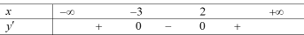
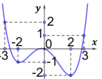
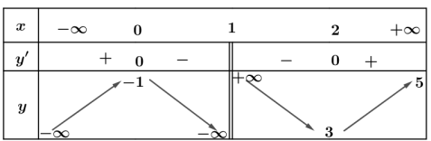
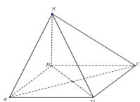
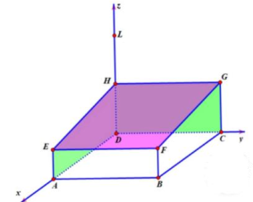
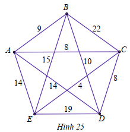
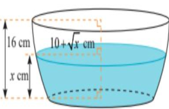

ĐỀ THI TOÁN - ĐỀ SỐ 26 HOT
Phần I: Trắc Nghiệm Nhiều Lựa Chọn
Tóm tắt kiến thức: Tính đơn điệu
Hàm số đồng biến trên khoảng mà đạo hàm \( f'(x) \geq 0 \).
Câu 1:
Cho hàm số \( y = f(x) \) có bảng xét dấu của đạo hàm như sau:

Hàm số đã cho đồng biến trên khoảng nào dưới đây?
Chọn đáp án:
Lời giải:
Dựa vào bảng xét dấu, \( f'(x) \geq 0 \) trên \( (-\infty; -3] \) và \( [2; +\infty) \), suy ra hàm số đồng biến trên \( (-3; +\infty) \).
Đáp án: B.
Tóm tắt kiến thức: Giá trị lớn nhất, nhỏ nhất
Giá trị lớn nhất và nhỏ nhất của hàm số trên đoạn được xác định từ các điểm đầu mút và điểm cực trị.
Câu 2:
Cho hàm số \( y = f(x) \) có đồ thị như hình vẽ.

Gọi \( M, m \) lần lượt là giá trị lớn nhất, giá trị nhỏ nhất của hàm số trên đoạn \([-3; 0]\). Tính \( 7M + 5m \).
Chọn đáp án:
Lời giải:
Dựa vào đồ thị, trên \([-3; 0]\): \( M = f(-3) = 2 \), \( m = f(-2) = -1 \).
Tính: \( 7M + 5m = 7 \cdot 2 + 5 \cdot (-1) = 14 - 5 = 9 \).
Đáp án: C.
Tóm tắt kiến thức: Tiệm cận
Tiệm cận ngang: \( \lim_{x \to \pm \infty} f(x) = k \). Tiệm cận đứng: \( \lim_{x \to a^-} f(x) = \pm \infty \) hoặc \( \lim_{x \to a^+} f(x) = \pm \infty \).
Câu 3:
Cho hàm số \( y = f(x) \) xác định trên \( \mathbb{R} \setminus \{1\} \) có bảng biến thiên như sau:

Tổng số tiệm cận ngang và tiệm cận đứng của đồ thị hàm số đã cho bằng
Chọn đáp án:
Lời giải:
Từ bảng biến thiên:
- \( \lim_{x \to +\infty} y = 5 \), có 1 tiệm cận ngang \( y = 5 \).
- \( \lim_{x \to 1^-} y = -\infty \), \( \lim_{x \to 1^+} y = +\infty \), có 1 tiệm cận đứng \( x = 1 \).
Tổng số tiệm cận: \( 1 + 1 = 2 \).
Đáp án: B.
Tóm tắt kiến thức: Đồ thị hàm số
Nhận dạng đồ thị dựa trên các đặc điểm đặc trưng của hàm số.
Câu 4:
Cho đồ thị hàm số như hình vẽ.

Đồ thị trên là đồ thị của hàm số nào dưới đây?
Chọn đáp án:
Lời giải:
Dựa vào hình dạng đồ thị các hàm số đã học, chọn hình 1 phù hợp.
Đáp án: A.
Tóm tắt kiến thức: Vector
Vector \( \overrightarrow{AB} = (x_B - x_A; y_B - y_A; z_B - z_A) \).
Câu 5:
Trong không gian \( Oxyz \), cho hai điểm \( A(-1; -2; 1) \) và \( B(2; 3; 2) \). Vector \( \overrightarrow{AB} \) có tọa độ là
Chọn đáp án:
Lời giải:
\( \overrightarrow{AB} = (x_B - x_A; y_B - y_A; z_B - z_A) = (2 - (-1); 3 - (-2); 2 - 1) = (3; 5; 1) \).
Đáp án: C.
Tóm tắt kiến thức: Phương trình mặt phẳng
Mặt phẳng song song với mặt phẳng khác có cùng vector pháp tuyến, đi qua điểm cho trước.
Câu 6:
Trong không gian \( Oxyz \), mặt phẳng \( (P) \) đi qua điểm \( M(1; 2; 3) \) và song song với mặt phẳng \( (Q): x - 2y + 3z + 1 = 0 \) có phương trình là
Chọn đáp án:
Lời giải:
Mặt phẳng \( (P) \) song song với \( (Q) \), có vector pháp tuyến \( \vec{n} = (1; -2; 3) \).
Phương trình: \( x - 2y + 3z + d = 0 \). Thay \( M(1; 2; 3) \): \( 1 - 2 \cdot 2 + 3 \cdot 3 + d = 0 \Rightarrow d = -6 \).
Phương trình: \( x - 2y + 3z - 6 = 0 \).
Đáp án: C.
Tóm tắt kiến thức: Mặt cầu
Phương trình mặt cầu: \( x^2 + y^2 + z^2 - 2ax - 2by - 2cz + d = 0 \), tâm \( (a; b; c) \), bán kính \( R = \sqrt{a^2 + b^2 + c^2 - d} \).
Câu 7:
Trong không gian \( Oxyz \), cho mặt cầu \( (S): x^2 + y^2 + z^2 - 8x + 2y + 1 = 0 \). Tọa độ tâm và bán kính mặt cầu \( (S) \) lần lượt là
Chọn đáp án:
Lời giải:
Phương trình: \( x^2 + y^2 + z^2 - 8x + 2y + 1 = 0 \).
Tâm: \( I\left(\frac{8}{2}; \frac{-2}{2}; 0\right) = (4; -1; 0) \).
Bán kính: \( R = \sqrt{4^2 + (-1)^2 + 0^2 - 1} = \sqrt{16 + 1 - 1} = 4 \).
Đáp án: D.
Tóm tắt kiến thức: Khoảng tứ phân vị
Khoảng tứ phân vị \( \Delta_Q = Q_3 - Q_1 \), với \( Q_1, Q_3 \) là tứ phân vị thứ nhất và thứ ba.
Câu 8:
Cho bảng tần số ghép nhóm số liệu thống kê cân nặng của 40 học sinh lớp 11A trong một trường trung học phổ thông (đơn vị: kilogam).
| Nhóm | \([30; 40)\) | \([40; 50)\) | \([50; 60)\) | \([60; 70)\) | \([70; 80)\) | \([80; 90)\) |
|---|---|---|---|---|---|---|
| Tần số | 2 | 10 | 16 | 8 | 2 | 2 |
Xác định khoảng tứ phân vị của mẫu số liệu ghép nhóm đó.
Chọn đáp án:
Lời giải:
Tổng số học sinh: \( n = 40 \).
- Tứ phân vị thứ nhất \( Q_1 = \frac{x_{10} + x_{11}}{2} \), thuộc \([40; 50)\): \( Q_1 = 40 + \frac{\frac{40}{4} - 2}{10} \cdot 10 = 48 \).
- Tứ phân vị thứ ba \( Q_3 = \frac{x_{30} + x_{31}}{2} \), thuộc \([60; 70)\): \( Q_3 = 60 + \frac{\frac{3 \cdot 40}{4} - (2 + 10 + 16)}{8} \cdot 10 = 62.5 \).
Khoảng tứ phân vị: \( \Delta_Q = Q_3 - Q_1 = 62.5 - 48 = 14.5 \).
Đáp án: B.
Tóm tắt kiến thức: Tích phân
Tính chất: \( \int_a^c f(x) \, dx = \int_a^b f(x) \, dx + \int_b^c f(x) \, dx \).
Câu 9:
Nếu \( \int_1^2 f(x) \, dx = -2 \) và \( \int_1^3 f(x) \, dx = 1 \), thì \( \int_2^3 f(x) \, dx \) bằng
Chọn đáp án:
Lời giải:
Theo tính chất: \( \int_1^3 f(x) \, dx = \int_1^2 f(x) \, dx + \int_2^3 f(x) \, dx \).
\( 1 = -2 + \int_2^3 f(x) \, dx \Rightarrow \int_2^3 f(x) \, dx = 1 + 2 = 3 \).
Đáp án: B.
Tóm tắt kiến thức: Hình học không gian
Mặt phẳng vuông góc với mặt phẳng khác nếu chứa đường thẳng vuông góc với mặt phẳng đó.
Câu 10:
Cho hình chóp \( S.ABCD \) có đáy \( ABCD \) là hình thoi và \( SB \perp (ABCD) \).

Mặt phẳng nào sau đây vuông góc với mặt phẳng \( (SBD) \)?
Chọn đáp án:
Lời giải:
Vì \( ABCD \) là hình thoi, \( AC \perp BD \). Vì \( SB \perp (ABCD) \), suy ra \( AC \perp SB \).
Vậy \( AC \perp (SBD) \). Do \( AC \subset (SAC) \), nên \( (SAC) \perp (SBD) \).
Đáp án: D.
Tóm tắt kiến thức: Cấp số nhân
Cấp số nhân có công bội \( q \), thỏa \( u_{n+1} = u_n \cdot q \).
Câu 11:
Dãy số nào sau đây không phải là một cấp số nhân?
Chọn đáp án:
Lời giải:
Kiểm tra:
- A: \( \frac{-3}{1} = -3 \), \( \frac{9}{-3} = -3 \), \( \frac{-27}{9} = -3 \), \( \frac{54}{-27} = -2 \). Không là cấp số nhân.
- B: Công bội \( q = 2 \). Là cấp số nhân.
- C: Công bội \( q = -1 \). Là cấp số nhân.
- D: Công bội \( q = -2 \). Là cấp số nhân.
Đáp án: A.
Tóm tắt kiến thức: Bất phương trình logarit
Bất phương trình \( \log_a f(x) > \log_a g(x) \): \( f(x) > g(x) \) nếu \( a > 1 \), kèm điều kiện \( f(x) > 0 \), \( g(x) > 0 \).
Câu 12:
Tập nghiệm của bất phương trình \( \log_2 (2x) > \log_2 5 \) là
Chọn đáp án:
Lời giải:
Điều kiện: \( 2x > 0 \Rightarrow x > 0 \).
\( \log_2 (2x) > \log_2 5 \Rightarrow 2x > 5 \Rightarrow x > \frac{5}{2} \).
Tập nghiệm: \( \left( \frac{5}{2}; +\infty \right) \).
Đáp án: A.
Phần II: Trắc Nghiệm Đúng/Sai
Tóm tắt kiến thức: Chuyển động con lắc
Vận tốc, gia tốc, và cực trị của hàm số lượng giác.
Câu 13:
Vận tốc \( v \, (\text{cm/s}) \) của con lắc đơn theo thời gian \( t \) được cho bởi công thức: \( v(t) = 2 \sin \left( 2t + \frac{\pi}{6} \right) \). Xét các phát biểu sau:
Chọn đáp án cho từng phát biểu:
a)
b)
c)
d)
Lời giải:
a) Đúng. \( v(0) = 2 \sin \left( \frac{\pi}{6} \right) = 2 \cdot \frac{1}{2} = 1 \).
b) Sai. \( v'(t) = 2 \cdot 2 \cos \left( 2t + \frac{\pi}{6} \right) = 4 \cos \left( 2t + \frac{\pi}{6} \right) \).
c) Đúng. \( v'(t) = 4 \cos \left( 2t + \frac{\pi}{6} \right) = 0 \Rightarrow 2t + \frac{\pi}{6} = \frac{\pi}{2} + k\pi \Rightarrow t = \frac{\pi}{6} + k \frac{\pi}{2} \). Trên \( \left[0; \frac{\pi}{2}\right] \), \( t = \frac{\pi}{6} \).
d) Sai. Vận tốc lớn nhất khi \( \sin \left( 2t + \frac{\pi}{6} \right) = 1 \Rightarrow 2t + \frac{\pi}{6} = \frac{\pi}{2} + k 2\pi \Rightarrow t = \frac{\pi}{6} + k\pi \). Từ 0 đến 10s, có 3 nghiệm: \( t = \frac{\pi}{6}, \frac{\pi}{6} + \pi, \frac{\pi}{6} + 2\pi \).
Đáp án: a) Đúng, b) Sai, c) Đúng, d) Sai.
Tóm tắt kiến thức: Chuyển động thẳng
Khoảng cách giữa hai vật: \( \int_a^b [v_1(t) - v_2(t)] \, dt \).
Câu 14:
Hai chiếc xe A và B có vận tốc lần lượt là \( v_1(t) \) và \( v_2(t) \) kể từ lúc xuất phát được thử nghiệm trên một đường thẳng. Cho biết: \( \int_0^5 [v_1(t) - v_2(t)] \, dt = 10 \), \( \int_0^{10} [v_1(t) - v_2(t)] \, dt = 30 \), \( \int_{20}^{30} [v_1(t) - v_2(t)] \, dt = -5 \). Xét các phát biểu sau:
Chọn đáp án cho từng phát biểu:
a)
b)
c)
d)
Lời giải:
a) Sai. Quãng đường: \( s_1(t) = \int_0^t v_1(t) \, dt \), không phải \( \int_0^{30} \).
b) Sai. Không biết điểm xuất phát, không xác định được khoảng cách tại \( t = 5 \).
c) Đúng. Cùng xuất phát, \( \int_0^{10} [v_1(t) - v_2(t)] \, dt = 30 \), xe A trước xe B 30 m.
d) Sai. Tại \( t = 20 \), xe A trước 15 m. Từ 20 đến 30s, \( \int_{20}^{30} [v_1(t) - v_2(t)] \, dt = -5 \), xe A sau xe B 10 m (\( 15 - 5 \)), không phải 5 m.
Đáp án: a) Sai, b) Sai, c) Đúng, d) Sai.
Tóm tắt kiến thức: Xác suất
Xác suất điều kiện: \( P(B|\bar{A}) = \frac{P(B \cap \bar{A})}{P(\bar{A})} \). Xác suất giao: \( P(A \cap B) \).
Câu 15:
Một công ty muốn khảo sát nhu cầu nhân viên chọn ở lại làm việc tại công ty sau một năm làm việc hay rời đi nếu được công ty đào tạo chuyên môn thường xuyên. Trong vòng một năm, công ty đã thống kê kết quả của 256 nhân viên được tuyển dụng, kết quả tóm tắt trong bảng sau:
| Số nhân viên ở lại | Số nhân viên rời đi | Tổng cộng | |
|---|---|---|---|
| Được đào tạo thường xuyên | 109 | 43 | 152 |
| Không được đào tạo thường xuyên | 60 | 44 | 104 |
| Tổng cộng | 169 | 87 | 256 |
Gọi \( A \): “Nhân viên được đào tạo thường xuyên”. Gọi \( B \): “Nhân viên ở lại làm việc sau một năm”. Xét các phát biểu sau:
Chọn đáp án cho từng phát biểu:
a)
b)
c)
d)
Lời giải:
a) Đúng. \( P(A) = \frac{152}{256} \).
b) Đúng. \( P(B) = \frac{169}{256} \).
c) Đúng. \( P(A \cap B) = \frac{109}{256} \).
d) Sai. \( P(B|\bar{A}) = \frac{P(B \cap \bar{A})}{P(\bar{A})} = \frac{\frac{60}{256}}{\frac{104}{256}} = \frac{60}{104} \).
Đáp án: a) Đúng, b) Đúng, c) Đúng, d) Sai.
Tóm tắt kiến thức: Hình học không gian
Phương trình đường thẳng, góc giữa đường thẳng và mặt phẳng, khoảng cách trong không gian.
Câu 16:
Một đơn vị thiết kế theo đơn đặt hàng, làm một nhà vườn ngoài trời để trồng rau. Người thiết kế đã vẽ mô hình nhà vườn trong tọa độ \( Oxyz \) như hình vẽ, với các cột nhà là các đoạn thẳng \( AE, BF, CG, DH \); phần mái là tứ giác \( EFGH \) và hình vuông \( ABCD \) nằm trên mặt đất. Biết độ dài các đoạn thẳng \( AB = 20 \, \text{m} \), \( DH = 4 \, \text{m} \), \( AE = 3 \, \text{m} \).

Xét các phát biểu sau:
Chọn đáp án cho từng phát biểu:
a)
b)
c)
d)
Lời giải:
a) Đúng. Tọa độ \( B(20; 20; 0) \), \( H(0; 0; 4) \) đúng theo hình vẽ.
b) Sai. Tọa độ \( E(20; 0; 3) \), \( \overrightarrow{HE} = (20; 0; -1) \). Phương trình: \( \left\{ \begin{array}{l} x = 20t \\ y = 0 \\ z = 4 - t \end{array} \right. \).
c) Sai. Góc với mặt đất (\( z = 0 \)): \( \sin \alpha = \frac{|(-1) \cdot 1|}{\sqrt{20^2 + 0^2 + (-1)^2} \cdot 1} = \frac{1}{\sqrt{401}} \approx 0.0499 \Rightarrow \alpha \approx 2.86^\circ \).
d) Sai. \( M \) là tâm mặt cầu qua \( A, B, C, D \), bán kính \( 2\sqrt{66} \). Tọa độ \( M(10; 10; 8) \), \( L(0; 0; 8) \). Khoảng cách \( ML = \sqrt{(10-0)^2 + (10-0)^2 + (8-8)^2} = 10\sqrt{2} \neq 10\sqrt{3} \).
Đáp án: a) Đúng, b) Sai, c) Sai, d) Sai.
Phần III: Trắc Nghiệm Trả Lời Ngắn
Tóm tắt kiến thức: Khoảng cách trong không gian
Khoảng cách từ điểm đến mặt phẳng được tính qua đường vuông góc.
Câu 17:
Ông An muốn thiết kế một mái che giếng trời hình chóp di động để có thể tùy thích lấy ánh sáng cho ngôi nhà của mình. Biết rằng đáy hình chóp là hình chữ nhật có độ dài hai cạnh đáy là \( 3 \, \text{m} \) và \( 2 \, \text{m} \); các cạnh bên bằng nhau (như hình vẽ minh họa).
Ông An mong muốn góc giữa mặt phẳng \( (SBC) \) và mặt phẳng đáy là \( \alpha \) thỏa mãn \( 30^\circ \leq \alpha \leq 45^\circ \), đồng thời khoảng cách từ điểm \( A \) tới mặt phẳng \( (SBC) \) là lớn nhất. Tính khoảng cách lớn nhất đó.
Nhập đáp án:
Lời giải:
Gọi \( O = AC \cap BD \), \( M \) là trung điểm \( BC \). Vì các cạnh bên bằng nhau và đáy là hình chữ nhật, \( SO \perp (ABCD) \Rightarrow SO \perp BC \).
\( OM \perp BC \Rightarrow BC \perp (SOM) \Rightarrow (SBC) \perp (SOM) \).
Góc \( \angle SMO = \alpha \), \( 30^\circ \leq \alpha \leq 45^\circ \).
Kéo \( OK \perp SM \), \( OK \perp (SBC) \). Khoảng cách: \( d(A, (SBC)) = 2 \cdot OK \).
\( OK = OM \cdot \sin \alpha \leq OM \cdot \sin 45^\circ = \frac{1}{2} \cdot AB \cdot \frac{\sqrt{2}}{2} = \frac{3 \sqrt{2}}{4} \).
Khoảng cách lớn nhất: \( \frac{3 \sqrt{2}}{2} \approx 2.12 \, \text{m} \).
Đáp án: 2.12.
Tóm tắt kiến thức: Bài toán đường đi
Tìm đường đi qua tất cả các đỉnh với tổng chi phí nhỏ nhất (bài toán đường đi Hamilton).
Câu 18:
Một trò chơi điện tử quy định như sau: Có 5 trụ \( A, B, C, D, E \) với số lượng các thử thách trên đường đi giữa các cặp trụ được mô tả trong hình vẽ.

Người chơi xuất phát từ một trụ nào đó, đi qua tất cả các trụ còn lại, mỗi khi đi qua một trụ thì trụ đó sẽ bị phá hủy và không thể quay trở lại trụ đó được nữa, nhưng người chơi vẫn phải trở về trụ ban đầu. Tổng số thử thách của đường đi thỏa mãn điều kiện trên nhận giá trị nhỏ nhất là bao nhiêu?
Nhập đáp án:
Lời giải:
Tìm đường đi Hamilton với tổng thử thách nhỏ nhất:
- Đường \( A \to C \to E \to B \to D \to A \): \( 8 + 4 + 15 + 10 + 14 = 51 \).
- Đường \( B \to A \to C \to E \to D \to B \): \( 9 + 8 + 4 + 19 + 10 = 50 \).
- Đường \( C \to E \to A \to B \to D \to C \): \( 4 + 14 + 9 + 10 + 8 = 45 \).
- Đường \( E \to C \to A \to B \to D \to E \): \( 4 + 8 + 9 + 10 + 19 = 50 \).
- Đường \( E \to C \to D \to B \to A \to E \): \( 4 + 8 + 10 + 9 + 14 = 45 \).
Tổng nhỏ nhất: 45.
Đáp án: 45.
Tóm tắt kiến thức: Giao điểm đường thẳng và mặt cầu
Giao điểm đường thẳng và mặt cầu được tìm bằng phương trình tham số.
Câu 19:
Trong không gian với hệ tọa độ \( Oxyz \), đài kiểm soát không lưu sân bay có tọa độ \( O(0; 0; 0) \), mỗi đơn vị trên trục ứng với \( 1 \, \text{km} \). Máy bay trong phạm vi cách đài kiểm soát \( 417 \, \text{km} \) sẽ hiển thị trên màn hình radar. Một máy bay đang ở vị trí \( A(222; 565; 8) \), chuyển động theo đường thẳng \( d \) có vector chỉ phương \( \vec{u} = (91; 75; 0) \) và hướng về đài kiểm soát không lưu. Tọa độ của vị trí sớm nhất mà máy bay xuất hiện trên màn hình radar là \( M(a; b; c) \). Khi đó \( a + b + c \) bằng bao nhiêu?
Nhập đáp án:
Lời giải:
Mặt cầu radar: \( x^2 + y^2 + z^2 = 417^2 \).
Đường thẳng: \( \left\{ \begin{array}{l} x = 222 + 91t \\ y = 565 + 75t \\ z = 8 \end{array} \right. \).
Giao với mặt cầu: \( (222 + 91t)^2 + (565 + 75t)^2 + 8^2 = 417^2 \Rightarrow t = -2, -7 \).
Giao điểm: \( B(40; 415; 8) \), \( C(-415; 40; 8) \).
Khoảng cách: \( AB \approx 236 \, \text{km} \), \( AC \approx 825 \, \text{km} \). Máy bay hướng về \( O \), vị trí sớm nhất là \( B(40; 415; 8) \).
\( a + b + c = 40 + 415 + 8 = 463 \).
Đáp án: 463.
Tóm tắt kiến thức: Thể tích
Thể tích: \( V = \int_a^b S(x) \, dx \), với \( S(x) \) là diện tích mặt cắt.
Câu 20:
Nếu cắt chậu nước có hình dạng như hình vẽ bằng mặt phẳng song song và cách mặt đáy \( x \, (\text{cm}) \) (\( 0 \leq x \leq 16 \)), thì mặt cắt là hình tròn có bán kính \( (10 + \sqrt{x}) \, (\text{cm}) \).

Hỏi chậu nước chứa được tối đa bao nhiêu lít nước? (Kết quả làm tròn đến hàng phần chục).
Nhập đáp án:
Lời giải:
Diện tích mặt cắt: \( S(x) = \pi (10 + \sqrt{x})^2 = \pi (x + 100 + 20 \sqrt{x}) \).
Thể tích: \( V = \int_0^{16} \pi (x + 100 + 20 \sqrt{x}) \, dx = \pi \left[ \frac{x^2}{2} + 100x + \frac{40}{3} x^{3/2} \right]_0^{16} = \frac{7744}{3} \pi \approx 8109.5 \, \text{cm}^3 \approx 8.1 \, \text{lít} \).
Đáp án: 8.1.
Tóm tắt kiến thức: Tối ưu hóa
Tối ưu hóa diện tích mặt cắt để đạt thể tích lớn nhất.
Câu 21:
Để làm một máng xối nước có dạng hình lăng trụ, từ một tấm tôn kích thước \( 0.75 \, \text{m} \times 6 \, \text{m} \), người ta gập tấm tôn đó như hình vẽ dưới.

Biết mặt cắt của máng xối (được cắt bởi mặt phẳng song song với hai đầu máng xối) là một hình thang cân có đáy nhỏ và hai cạnh bên đều bằng \( 0.25 \, \text{m} \); còn đáy lớn có độ dài bằng \( x \, (\text{m}) \). Tìm thể tích lớn nhất máng xối được tạo thành? (Kết quả làm tròn đến hàng phần trăm theo đơn vị \( \text{m}^3 \)).
Nhập đáp án:
Lời giải:
Diện tích mặt cắt hình thang: \( S = \frac{1}{2} h (x + 0.25) \), với \( h = \sqrt{0.25^2 - \left( \frac{x - 0.25}{2} \right)^2} \).
\( S(x) = \frac{1}{4} (x + 0.25) \sqrt{0.25 - (x - 0.25)^2} \), \( 0.25 < x < 0.75 \).
Đạo hàm: \( S'(x) = \frac{-2x^2 + 0.5x + 0.25}{\sqrt{0.25 - (x - 0.25)^2}} = 0 \Rightarrow x = 0.5 \).
Tại \( x = 0.5 \), \( S_{\text{max}} = \frac{3 \sqrt{3}}{64} \).
Thể tích: \( V = S \cdot 6 = \frac{3 \sqrt{3}}{64} \cdot 6 \approx 0.12 \, \text{m}^3 \).
Đáp án: 0.12.
Tóm tắt kiến thức: Xác suất toàn phần
Xác suất toàn phần: \( P(B) = P(A) \cdot P(B|A) + P(\bar{A}) \cdot P(B|\bar{A}) \).
Câu 22:
Có hai thùng I và II chứa các sản phẩm có khối lượng và hình dạng như nhau. Thùng I có 5 chính phẩm và 4 phế phẩm, thùng II có 6 chính phẩm và 8 phế phẩm. Lấy ngẫu nhiên 1 sản phẩm từ thùng I sang thùng II. Sau đó, lấy ngẫu nhiên 1 sản phẩm từ thùng II để sử dụng. Xác suất lấy được chính phẩm từ thùng II là bao nhiêu (làm tròn kết quả đến hàng phần trăm)?
Nhập đáp án:
Lời giải:
Gọi \( A \): Lấy chính phẩm từ thùng I. \( B \): Lấy chính phẩm từ thùng II.
\( P(A) = \frac{5}{9} \), \( P(\bar{A}) = \frac{4}{9} \).
\( P(B|A) = \frac{7}{15} \), \( P(B|\bar{A}) = \frac{6}{15} = \frac{2}{5} \).
\( P(B) = P(A) \cdot P(B|A) + P(\bar{A}) \cdot P(B|\bar{A}) = \frac{5}{9} \cdot \frac{7}{15} + \frac{4}{9} \cdot \frac{2}{5} \approx 0.44 \).
Đáp án: 0.44.